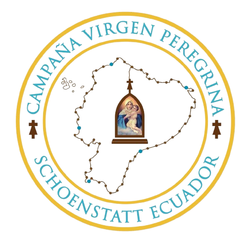

Es un pequeño santuario donde vivimos la Alianza de Amor con María, confiando en que Ella obra gracias en el corazón de quienes la visitan: Cobijamiento, Transformación interior, Envío apostólico.
La Virgen María te acoge como Madre y te conduce al encuentro con su Hijo Jesús.
Esta ermita pertenece a la "Campaña de la Virgen Peregrina del Movimiento Apostólico de Schoenstatt".
Un lugar santo desde el 11 de julio del 2011, entronizada por Mons. Lorenzo Voltoline.
🛡️ Estas peticiones son privadas y anónimas.
Cada día 18 de mes, todos los capitalarios son ofrecidos en una misa solemne del Día de la Alianza.
"En Schoenstatt, creemos que cada oración, sacrificio o buena acción ofrecida con amor, se convierte en un regalo espiritual para María"